Parallel generative processes
Parallel Video and Action DiTs use modality-specific prediction paths.
A World Action Model for Video Games
Joint future-video and native-action training, with action-only online control from realized visual context.
Future-video prediction provides training supervision; online inference generates native actions without future-video denoising.
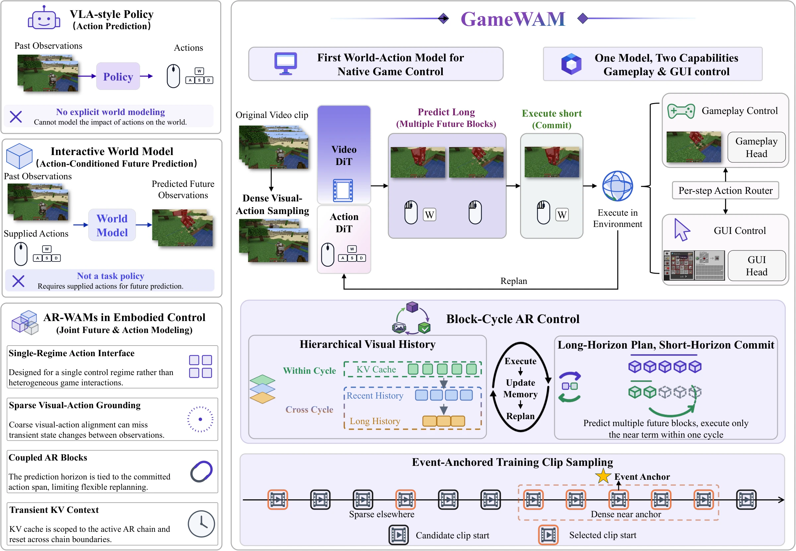
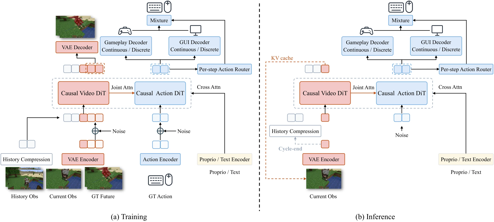
Parallel Video and Action DiTs use modality-specific prediction paths.
Gameplay and GUI interaction use separate action-flow predictions and normalization statistics.
Cycle-local context and compressed cross-cycle visual history span replanning cycles.
Execute the first 8 actions of each 16-action plan, discard the suffix, observe the new state, and replan.
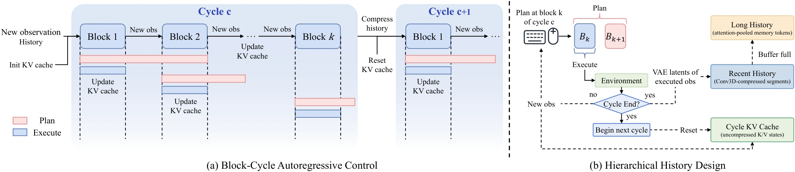
Closed-loop evaluation covers more than 800 MCU tasks and a four-map ViZDoom suite.
| Model | Game PT. | Embodied tasks | GUI tasks | Combat tasks | Average | |||||||
|---|---|---|---|---|---|---|---|---|---|---|---|---|
| Steps ↓ | Mini ↑ | All ↑ | Steps ↓ | Mini ↑ | All ↑ | Steps ↓ | Mini ↑ | All ↑ | Mini ↑ | All ↑ | ||
| VPT | × | 377 | 10.1 | 6.0 | 398 | 0.7 | 0.8 | 396 | 3.6 | 3.6 | 4.8 | 3.5 |
| STEVE-1 | × | 384 | 8.4 | 8.0 | 391 | 0.0 | 3.2 | 395 | 4.9 | 3.9 | 4.4 | 5.0 |
| ROCKET-1 | × | 392 | 19.2 | 18.9 | — | 0.0 | 0.0 | 320 | 29.8 | 27.9 | 16.3 | 15.6 |
| JARVIS-VLA | × | 305 | 31.0 | 30.0 | 339 | 25.3 | 25.1 | 352 | 18.3 | 18.5 | 24.9 | 24.5 |
| LatentHA | × | 363 | 27.3 | 24.4 | 393 | 3.5 | 3.0 | 371 | 8.2 | 8.5 | 13.0 | 12.0 |
| MotionHA | × | 336 | 31.6 | 27.4 | — | 0.0 | 0.0 | 392 | 9.1 | 4.3 | 13.6 | 10.6 |
| GroundingHA | × | 290 | 39.7 | 37.1 | 380 | 3.7 | 6.7 | 346 | 28.2 | 26.5 | 23.9 | 23.4 |
| SkillHA | × | 365 | 13.8 | 11.3 | 397 | 3.4 | 6.3 | 393 | 3.4 | 6.5 | 6.9 | 8.0 |
| TextVLA | × | 321 | 23.9 | 27.0 | 291 | 14.0 | 25.8 | 317 | 27.1 | 10.0 | 21.7 | 20.9 |
| OpenHA | × | 287 | 37.0 | 30.1 | 314 | 33.3 | 32.5 | 316 | 40.0 | 31.9 | 36.8 | 31.5 |
| Game-TARS | ✓ | 373 | — | 50.4 | 406 | — | 39.1 | 372 | — | 38.1 | — | 42.5 |
| GameWAM | × | 138 | 70.0 | 47.5 | 155 | 43.0 | 60.0 | 203 | 39.0 | 32.2 | 50.7 | 46.6 |
Steps ↓ Average native interaction steps over successful episodes.
ASR Mini / All ↑ Average success rate using 10 / 5 runs per task.
Game PT. Large-scale policy or continual pretraining on interaction data spanning many game environments; single-game training and generic foundation-model pretraining are excluded.
— Not reported.
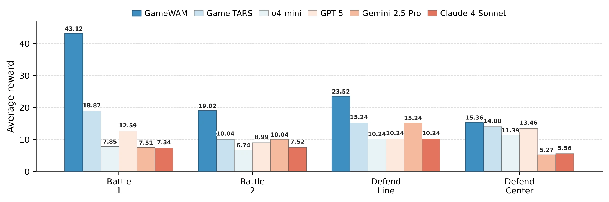
In the matched comparison, overall MCU Mini/All ASR is 50.7/46.6 versus 46.3/39.6, with mean execution frequency of 12.51 versus 8.12 Hz.
| Mask | MCU Mini ↑ | MCU All ↑ | Frequency ↑ |
|---|---|---|---|
| Modality-decoupled | 50.7 | 46.6 | 12.51 Hz |
| Joint video–action | 46.3 | 39.6 | 8.12 Hz |
Selected Minecraft and ViZDoom trajectories are shown as qualitative diagnostics rather than additional benchmark results.
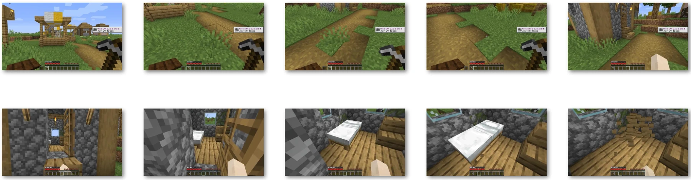
The white bed is absent from the initial observation. GameWAM explores the nearby environment through native movement and viewpoint adjustment, enters a structure where the target becomes visible, and then completes the mining interaction. This example is interpreted as closed-loop local exploration rather than evidence of an explicit search algorithm or symbolic planner.
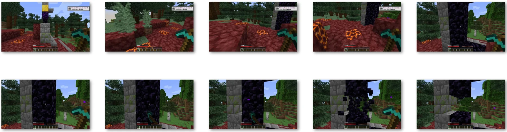
Obtaining obsidian requires a sustained mining action rather than a brief click. After approaching and aligning with the target block, GameWAM maintains the required behavior across successive replanning steps until the block breaks. The sequence illustrates temporal consistency of native-action control during a long interaction.
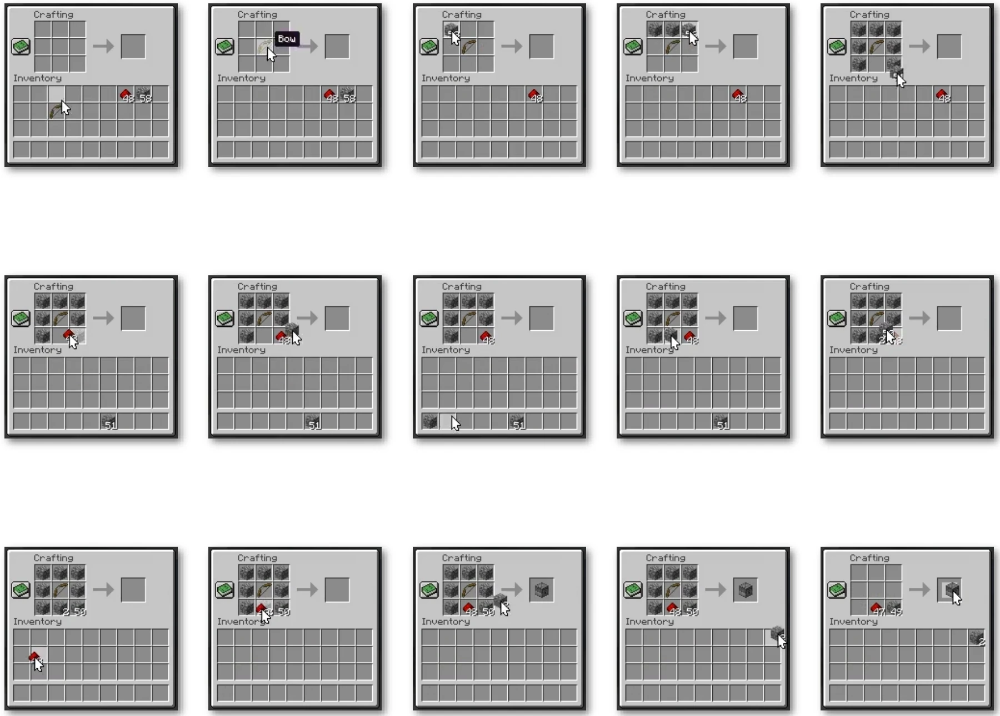
The initial sequence includes an intermediate placement error that leaves the crafting grid incorrect. After the resulting GUI state is observed, subsequent actions modify the placement and construct the valid recipe. The rollout illustrates recovery through repeated closed-loop observation and replanning, not a perfectly correct open-loop sequence.
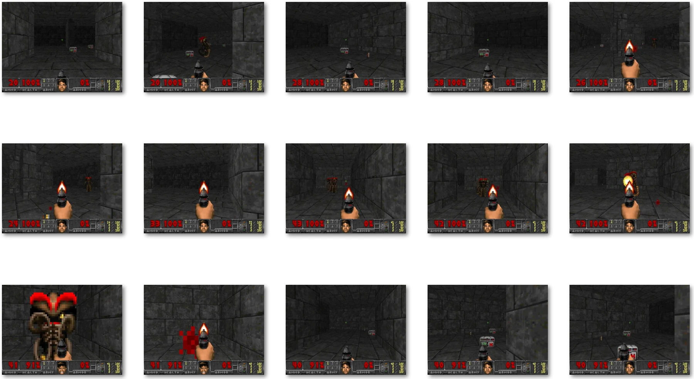
The rollout alternates between navigation and combat as enemies enter the field of view. GameWAM changes orientation to bring nearby threats into the firing direction, engages them, and continues moving through the environment. Movement, target acquisition, and firing are repeatedly recomputed from newly realized observations.
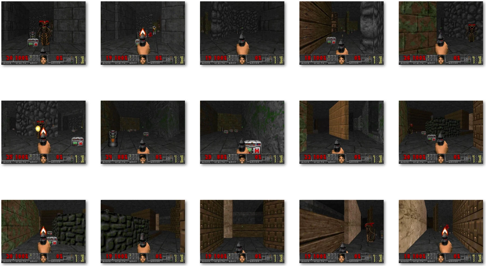
Walls and corridors repeatedly change which enemies and resources are visible. After taking damage during combat, GameWAM approaches and collects a health pack, recovers health, then continues through the maze and resumes combat. Subsequent actions are conditioned on the realized change in agent state.
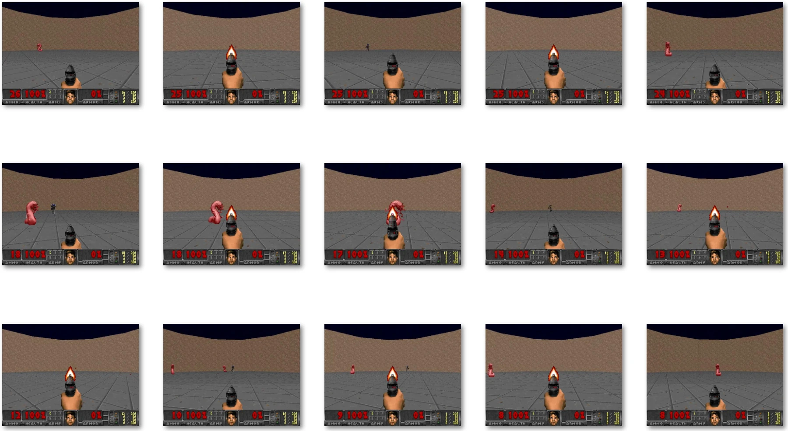
Threats are not restricted to one frontal direction. From the central position, GameWAM repeatedly changes view orientation, redirects its aim between different parts of the arena, and fires as enemies enter actionable views. The example emphasizes target switching rather than pursuit through the environment.
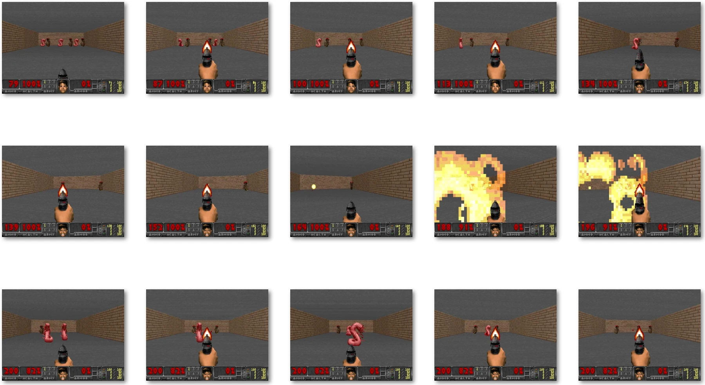
Enemies approach from the front under constrained movement. GameWAM repeatedly acquires approaching enemies, adjusts horizontal aim, and fires as the active threat changes. The sequence illustrates reactive closed-loop control under the frontal-defense objective.
Under fixed conditioning, interventions on low-temporal-frequency action-source components causally change corresponding coarse generated camera-motion components.
When one sampled source is reused across replanning steps, its low-frequency bias can accumulate into persistent turning. Resampling at each step largely removes the episode-level failure pattern, but not the underlying source sensitivity.
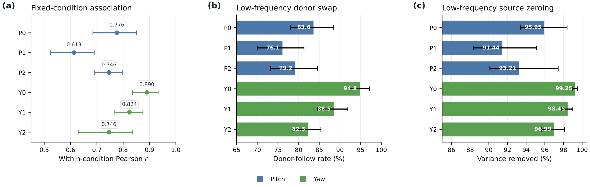
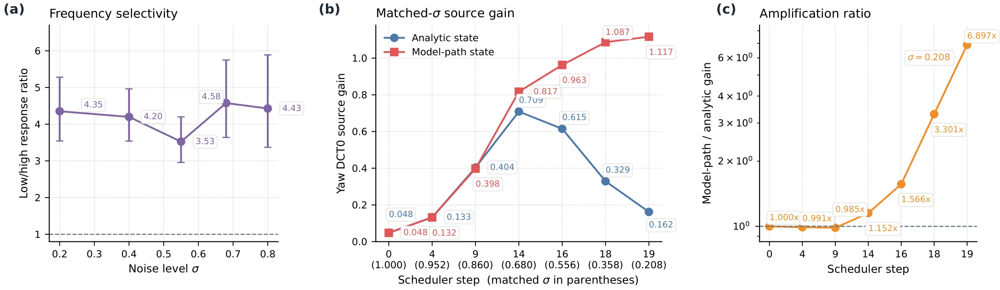
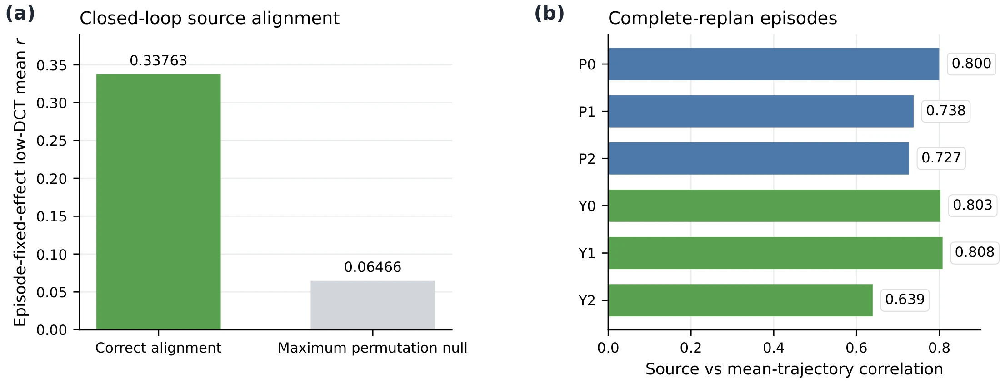
World modeling meets
native action.